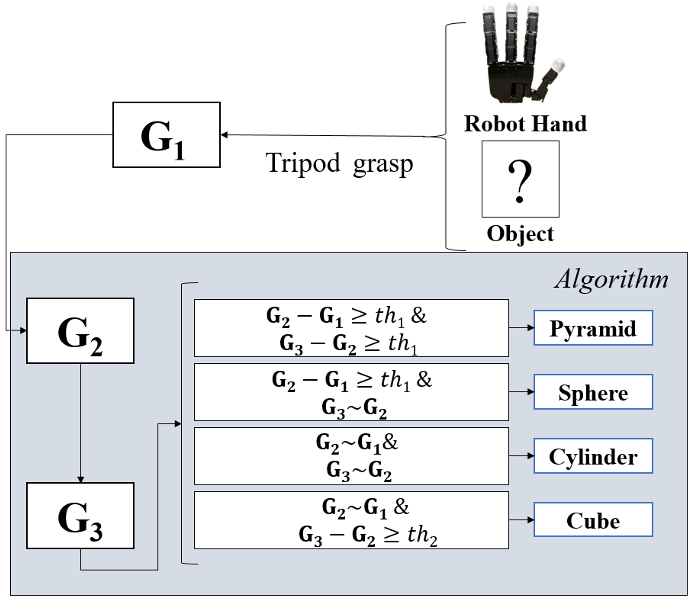
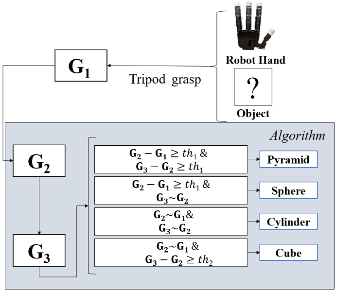

Action-Driven Tactile Object Recognition using Silver Nanowire Injected Sensors
Project Date: May 29, 2023
Project Overview
This project explores a novel action-driven tactile object recognition approach using advanced silver nanowire-injected sensors. The primary goal is to enable a robot to recognize and reconstruct object shapes by leveraging tactile feedback through repeated grasps. Unlike traditional vision-based methods, this approach emphasizes haptic perception to improve the robot’s ability to interact with and understand various objects in low-visibility or cluttered environments.
Methodology
The tactile sensors are created by injecting silver nanowires into a flexible foam layer, allowing the sensors to detect pressure changes based on resistance variations. These sensors are integrated into the fingertips of a robotic hand, equipped with a custom-built, Arduino-controlled data acquisition unit for resistance data collection. The collected data is processed through the Robot Operating System (ROS) for real-time feedback.
Exploration and Shape Recognition Process
To recognize shapes, the robot employs a series of pre-defined grasps, each designed to interact with different parts of the object. When the robot makes contact with the object, the tactile sensors register pressure changes, generating data points that form a "tactile point cloud." By repeating this grasping process, the robot gradually builds a comprehensive tactile map of the object's surface.
The system classifies four basic shapes—cube, cylinder, pyramid, and sphere—using only three tripod grasps. The tripod grasp involves three fingers pressing at specified points, optimizing contact and pressure distribution across the object’s surface to generate unique pressure patterns corresponding to each shape.
Results and Findings
The tactile recognition system achieved a remarkable 98% accuracy rate in distinguishing between the four target shapes. This success highlights the efficacy of silver nanowire-injected sensors in capturing fine-grained tactile information, even with minimal grasps. The sensors’ flexibility and responsiveness enabled the system to detect subtle shape nuances, a critical factor for high-precision tactile sensing.
The tactile sensors, protected by a silicone layer, demonstrated robust performance across various object sizes. The experiments revealed that the silicone layer not only safeguarded the sensors from wear but also enhanced sensitivity by providing uniform pressure distribution, ensuring reliable and repeatable measurements.
Key Advantages
- Low Power Consumption: The use of silver nanowires allows for minimal power requirements, making it feasible for battery-operated or mobile robotic systems.
- Enhanced Durability: The silicone-protected sensors showed excellent durability, maintaining accuracy over prolonged use.
- High Accuracy: The action-driven approach combined with precise sensor feedback resulted in a nearly 100% recognition rate for basic shapes.
Technologies Used
- Silver Nanowire-Injected Tactile Sensors
- Robot Operating System (ROS)
- Arduino Microcontroller for Data Acquisition
- 3D Printing for Object Fabrication
- Servo Motor-Controlled Translational Mechanism
Project Gallery
 
